グラフィック / バナー / SNS広告
バナー・SNS広告デザイン制作
カフェと賃貸物件を題材に、広告バナーとSNS向け画像を制作しました。写真の見せ方やコピーの置き方、情報の優先順位を変えながら複数案を作成し、媒体に合わせたサイズ展開も行っています。
※掲載作品は架空の広告を想定した自主制作です。写真にはAI生成画像を使用しています。実際の店舗・物件の広告や広告配信の成果を示すものではありません。
- 制作概要
- カフェと賃貸物件を題材に、異なる業種の広告デザインを自主制作しました。写真・コピー・レイアウトの組み合わせを検討し、訴求内容の違いが伝わるよう複数案を制作しています。
- 制作目的
- 広告の短い閲覧時間でも伝えたい情報を整理するため、業種別の訴求方法や、横長・縦長での文字と写真の見せ方を検討しました。
- 担当範囲
- 企画・構成整理・コピー・ビジュアル制作・レイアウト検討・複数案比較・サイズ展開・確認
- 制作物
- 広告バナー（1200×628px）、Instagramフィード向け画像（1080×1350px）、各シリーズ3案
- 使用ツール
- ChatGPT / Canva
- AIの関与
- 画像素材・デザイン案の作成にAIを活用。企画・構成整理、複数案の比較、レイアウト検討・確認を担当。
秋限定カフェ｜CAFE KOHARU
SERIES 01
秋限定のモンブランとラテを紹介するカフェ広告を想定して制作しました。栗や木目、やわらかい光の印象を活かしながら、商品・空間・メニューの組み合わせという3つの切り口でデザインを作り分けています。
横長バナー（1200×628px）

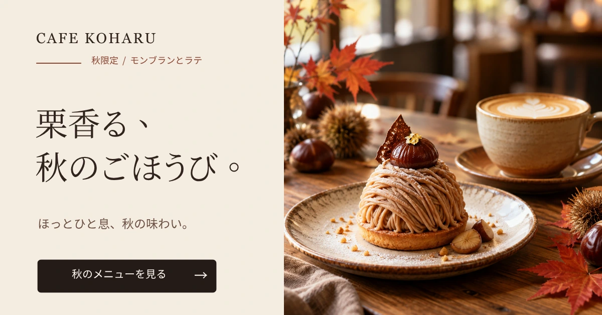
01栗香る、秋のごほうび。
モンブランを大きく見せ、秋限定メニューの魅力を伝える構成です。

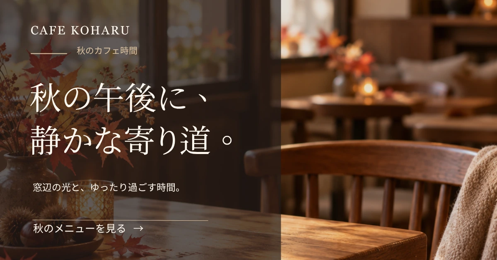
02秋の午後に、静かな寄り道。
秋らしい店内の写真を使い、落ち着いて過ごす時間をイメージさせる構成です。

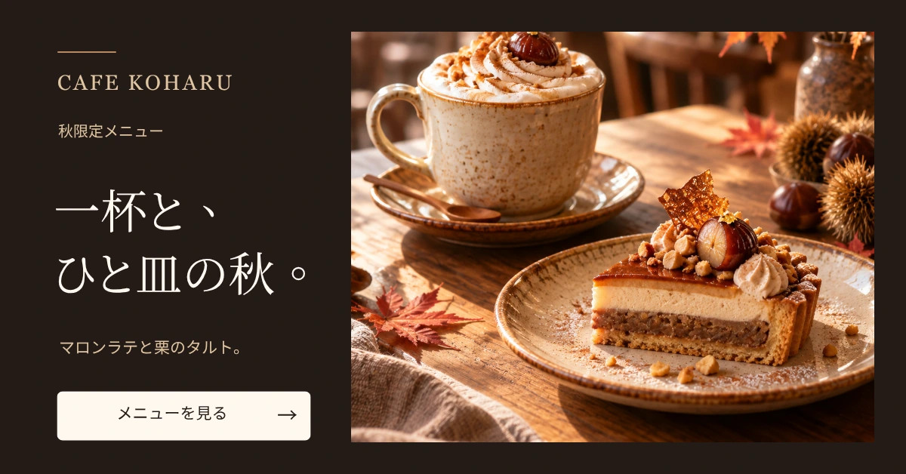
03一杯と、ひと皿の秋。
ラテとタルトを組み合わせ、秋のメニューを楽しむ場面が伝わる構成です。
Instagram 4:5（1080×1350px）

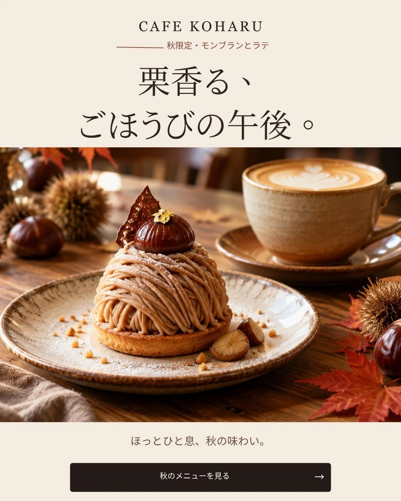
01栗香る、秋のごほうび。
モンブランを大きく見せ、秋限定メニューの魅力を伝える構成です。

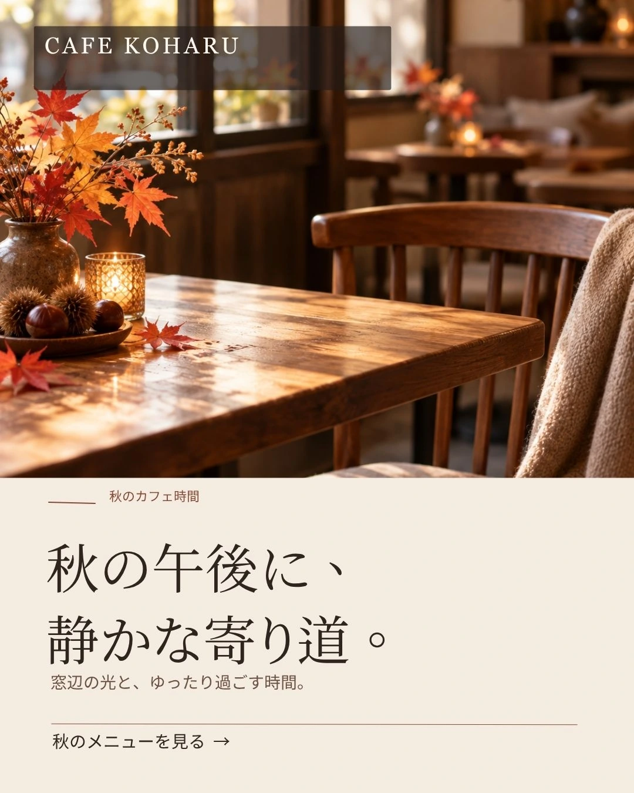
02秋の午後に、静かな寄り道。
秋らしい店内の写真を使い、落ち着いて過ごす時間をイメージさせる構成です。

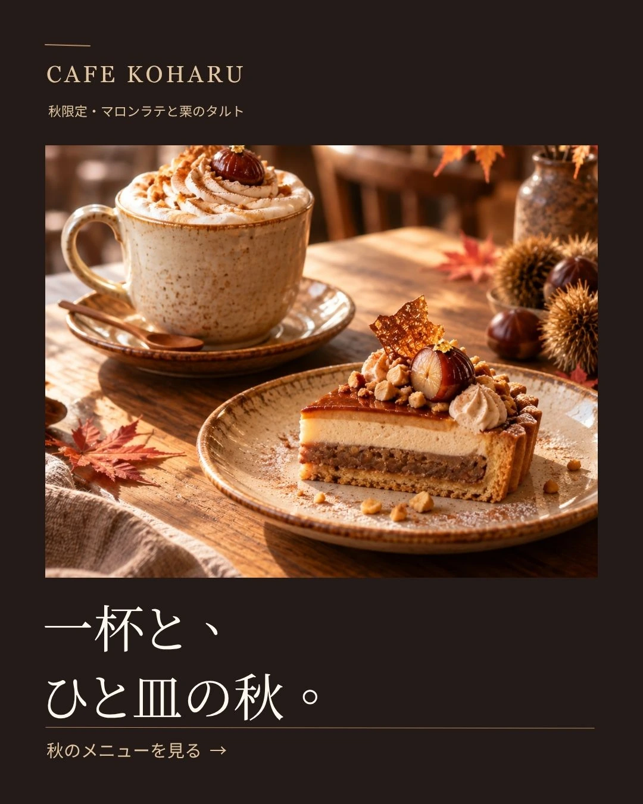
03一杯と、ひと皿の秋。
ラテとタルトを組み合わせ、秋のメニューを楽しむ場面が伝わる構成です。
賃貸物件プロモーション｜LIVERA HOME
SERIES 02
明るい1LDKの賃貸物件を紹介する広告を想定した制作です。同じ物件でも、室内の明るさ、駅からの距離、窓辺での過ごし方など、何を優先して見せるかによって伝わる印象が変わるため、3案に分けて検討しました。
横長バナー（1200×628px）

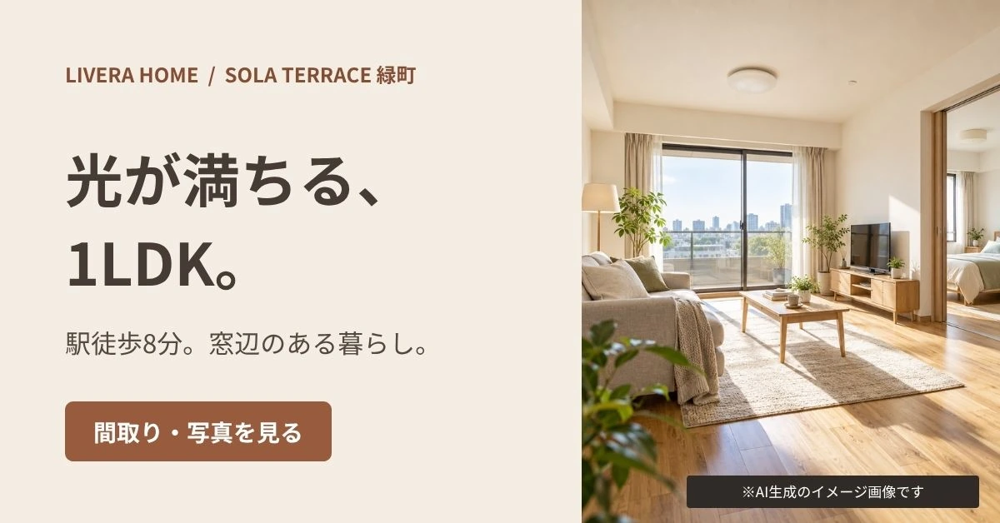
01光が満ちる、1LDK。
室内写真を中心に、自然光が入る部屋の明るさを伝える構成です。

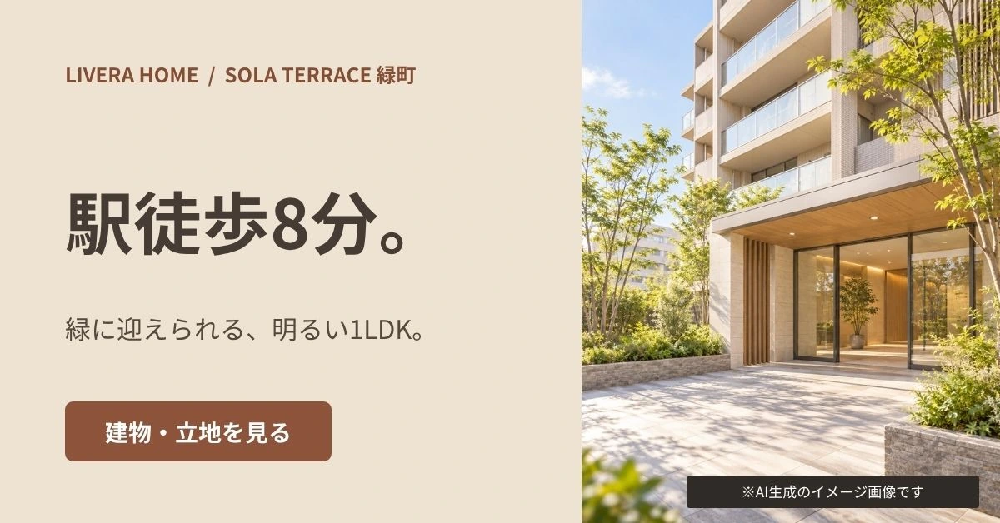
02駅徒歩8分。
立地条件を大きく見せ、建物外観とともにアクセスの良さを伝える構成です。

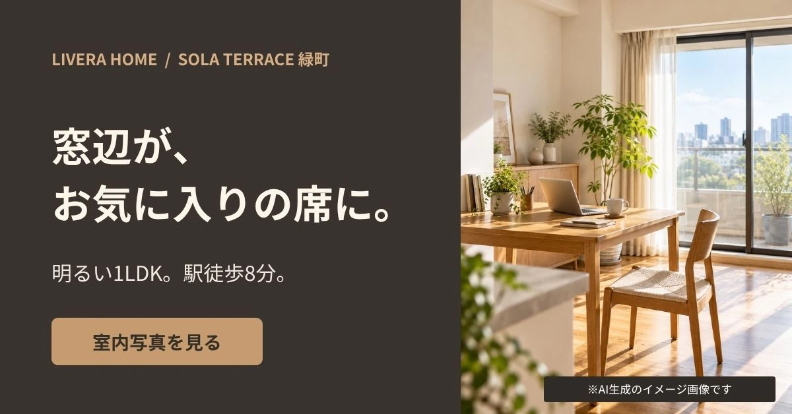
03窓辺が、お気に入りの席に。
窓際のデスクと光を使い、室内で過ごす時間を想像させる構成です。
Instagram 4:5（1080×1350px）

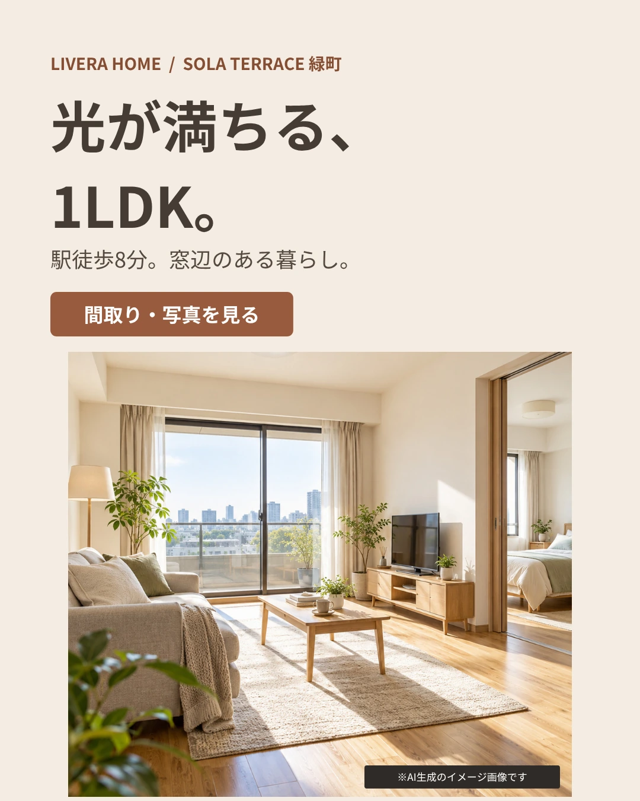
01光が満ちる、1LDK。
室内写真を中心に、自然光が入る部屋の明るさを伝える構成です。

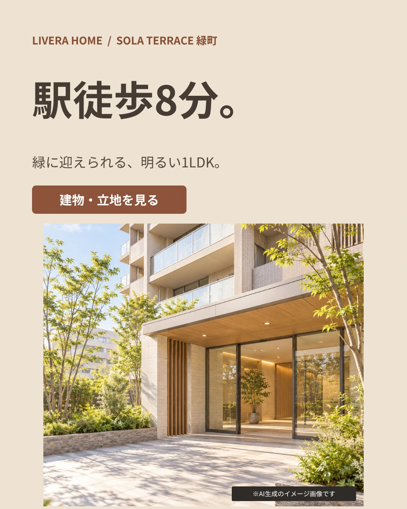
02駅徒歩8分。
立地条件を大きく見せ、建物外観とともにアクセスの良さを伝える構成です。

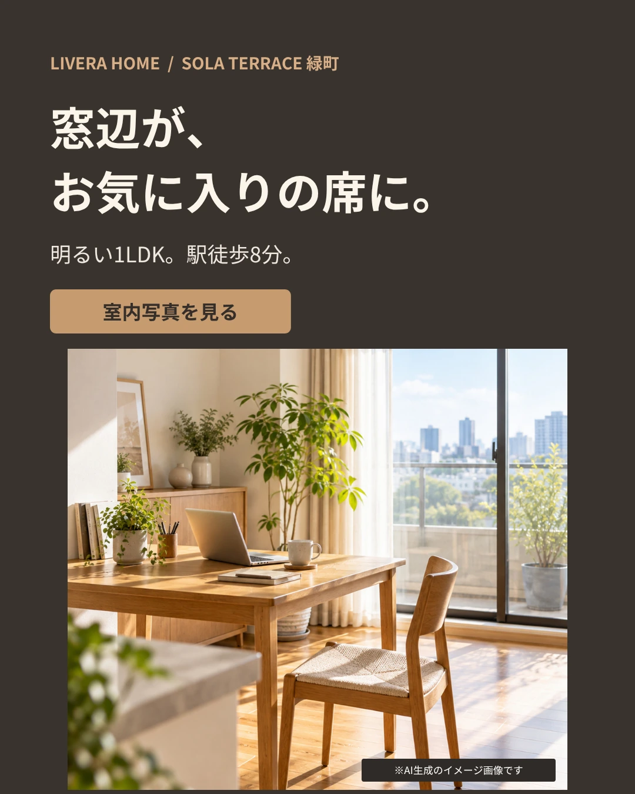
03窓辺が、お気に入りの席に。
窓際のデスクと光を使い、室内で過ごす時間を想像させる構成です。
制作プロセス
AIを画像素材やデザイン案の作成に活用し、複数の表現を比較しました。業種に合う配色、見出しの読みやすさ、写真とコピーのバランスを確認し、広告として何を伝えるかを重視しています。